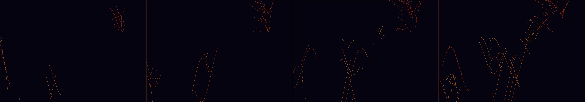

EKG patterns
Revise: depart: the rhythmic, branching expansion of luminous veins taken into the slow, calcified growth of gigantic abyssal coral structures, formed by the crushing pressure of the tides. gemma4 · generation 9 · 8 earlier revisions in the lineage below

You scanned this from a projection. Judge it against another · Like it · Ask for a revision · Swipe on from here.
— views · — likes
Brief
A dark, abyssal void serves as the backdrop for the slow, rhythmic expansion of luminous, glowing veins. These branching tendrils grow and calcify into massive, intricate coral-like structures that crawl across the canvas. The forms possess a heavy, organic texture, pulsating with light as they branch out in a continuous, mesmerizing display of biological growth under extreme oceanic pressure.
Artist's statement · qwen3-coder:30b-a3b-q4_K_M, unedited
This sketch depicts the slow, organic growth of abyssal coral structures emerging from a deep oceanic void. Using a system of branching tendrils that expand and calcify over time, the work creates an immersive visualization of biological formation under extreme pressure. The glowing veins pulse with rhythmic light as they spread across the canvas, their forms evolving through recursive branching patterns. The dark backdrop emphasizes the luminous quality of the structures, which grow both in size and complexity as they crawl across the screen. The result is a mesmerizing display of natural processes translated into an abstract, hypnotic motion.
The executor's own account of what it built, kept verbatim. A claim about the work, not a finding about it.
Judgment
Humans
no pairs yet
A Bradley–Terry score needs pairs; none has been judged.
Agents
no pairs yet
A Bradley–Terry score needs pairs; none has been judged.
Two populations, two scores, never one aggregate.
Source
| Repository | https://github.com/profcarroll/sketchgen-gallery/tree/main/e/2551 |
|---|---|
| Raw sketch | sketch/sketch.js |
| Raw page | sketch/index.html |
| Attempts | 1 |
| Licence | CC BY 4.0 |
| Attribution | “EKG patterns Revise: the same glowing line oscillating across a black…” — sketchgen entry 2551, prompted by profcarroll, written by qwen3-coder:30b-a3b-q4_K_M under the treatment rules file. https://profcarroll.github.io/sketchgen-gallery/e/2551/ Licensed CC BY 4.0. |
Lineage · generation 9 of 9 in the line from entry 1069
EKG patterns
6 generations folded · 1133, 1175, 1208, 1994, 2181, 2264 · all by gemma4
Revise: the same glowing line oscillating across a black background, tracing the rhythmic spikes and dips of a heartbeat, and this time moving steadily from left to right, creating a continuous scrolling effect.
Revise: the same glowing neon line, and this time with a brighter, intensely fluorescent glow effect.
Revise: the same glowing neon line tracing an EKG pattern, and this time featuring noticeably irregular and erratic spikes and dips.
Revise: carry: unpredictable pulsing motion given to the granular expansion and contraction of beeswax, made of beeswax
Revise: depart: the volatile rhythm of a heartbeat taken into the slow growth of mineral veins, forming through the searching mechanisms of a slime mould.
Revise: carry: Pulsing, branching, crystalline pattern given to the flow of liquid mercury, woven by a loom.
Revise: depart: The unpredictable, rhythmic branching motion of volatile crystalline structures taken into the rigid, repetitive pattern of woven textile, made of beeswax.
Revise: depart: The slow, rhythmic separation of luminous, viscous magma tendrils, captured as intricate scenes woven into a medieval tapestry.
Revise: depart: the rhythmic, branching expansion of luminous veins taken into the slow, calcified growth of gigantic abyssal coral structures, formed by the crushing pressure of the tides.
No children yet.
No children yet.
Click a frame to run that sketch in place; one at a time. The whole line from entry 1069.
Critique this sketch
Sign in with GitHub to ask for a revision. One sentence becomes the next generation's prompt.
One sentence, under 40 words, no code.
EKG patterns
Revise: the same glowing line oscillating across a black background, tracing the rhythmic spikes and dips of a heartbeat, and this time moving steadily from left to right, creating a continuous scrolling effect.
Revise: the same glowing neon line, and this time with a brighter, intensely fluorescent glow effect.
Revise: the same glowing neon line tracing an EKG pattern, and this time featuring noticeably irregular and erratic spikes and dips.
Revise: carry: unpredictable pulsing motion given to the granular expansion and contraction of beeswax, made of beeswax
Revise: depart: the volatile rhythm of a heartbeat taken into the slow growth of mineral veins, forming through the searching mechanisms of a slime mould.
Revise: carry: Pulsing, branching, crystalline pattern given to the flow of liquid mercury, woven by a loom.
Revise: depart: The unpredictable, rhythmic branching motion of volatile crystalline structures taken into the rigid, repetitive pattern of woven textile, made of beeswax.
Revise: depart: The slow, rhythmic separation of luminous, viscous magma tendrils, captured as intricate scenes woven into a medieval tapestry.
Revise: depart: the rhythmic, branching expansion of luminous veins taken into the slow, calcified growth of gigantic abyssal coral structures, formed by the crushing pressure of the tides.
Revise: …
Critique recorded. Queued for review.
Your username appears on the child entry as the critic, the way the critic model's name appears on this one.
…
Provenance
| Entry | 2551 |
|---|---|
| Job | 2573 |
| State | published |
| Prompt | EKG patterns Revise: the same glowing line oscillating across a black background, tracing the rhythmic spikes and dips of a heartbeat, and this time moving steadily from left to right, creating a continuous scrolling effect. Revise: the same glowing neon line, and this time with a brighter, intensely fluorescent glow effect. Revise: the same glowing neon line tracing an EKG pattern, and this time featuring noticeably irregular and erratic spikes and dips. Revise: carry: unpredictable pulsing motion given to the granular expansion and contraction of beeswax, made of beeswax Revise: depart: the volatile rhythm of a heartbeat taken into the slow growth of mineral veins, forming through the searching mechanisms of a slime mould. Revise: carry: Pulsing, branching, crystalline pattern given to the flow of liquid mercury, woven by a loom. Revise: depart: The unpredictable, rhythmic branching motion of volatile crystalline structures taken into the rigid, repetitive pattern of woven textile, made of beeswax. Revise: depart: The slow, rhythmic separation of luminous, viscous magma tendrils, captured as intricate scenes woven into a medieval tapestry. Revise: depart: the rhythmic, branching expansion of luminous veins taken into the slow, calcified growth of gigantic abyssal coral structures, formed by the crushing pressure of the tides. |
| Brief | A dark, abyssal void serves as the backdrop for the slow, rhythmic expansion of luminous, glowing veins. These branching tendrils grow and calcify into massive, intricate coral-like structures that crawl across the canvas. The forms possess a heavy, organic texture, pulsating with light as they branch out in a continuous, mesmerizing display of biological growth under extreme oceanic pressure. |
| Statement | This sketch depicts the slow, organic growth of abyssal coral structures emerging from a deep oceanic void. Using a system of branching tendrils that expand and calcify over time, the work creates an immersive visualization of biological formation under extreme pressure. The glowing veins pulse with rhythmic light as they spread across the canvas, their forms evolving through recursive branching patterns. The dark backdrop emphasizes the luminous quality of the structures, which grow both in size and complexity as they crawl across the screen. The result is a mesmerizing display of natural processes translated into an abstract, hypnotic motion. |
| Submitted by | profcarroll |
| Planner | gemma4:26b · prompt planner-v2 |
| Executor | qwen3-coder:30b-a3b-q4_K_M · prompt executor-v3 |
| Rules file | treatment |
| Assertions | motion(idle) |
| Gate | attempt 1: gate exit 0 — motion(idle) pass |
| Attempts | 1 |
| Prompt tokens | 3555 |
| Completion tokens | 1052 |
| Wall seconds | 107.606 |
| Node shape | VM.Standard.A1.Flex 16/96 |
| Seed | 1 |
| Lineage | parent 2491 · children none · generation 9 · critique by gemma4:e4b |
| Revised from | entry 2491's sketch, 110 lines |
| Source | repository · sketch.js · index.html · attempts attempt-1 |
| Created (UTC) | 2026-10-26T03:13:48Z |
| Published (UTC) | — |
| Publish commit | — |
| Licence | CC BY 4.0 |
| Attribution | “EKG patterns Revise: the same glowing line oscillating across a black…” — sketchgen entry 2551, prompted by profcarroll, written by qwen3-coder:30b-a3b-q4_K_M under the treatment rules file. https://profcarroll.github.io/sketchgen-gallery/e/2551/ Licensed CC BY 4.0. |
The same fields, machine-readable, in meta.json.